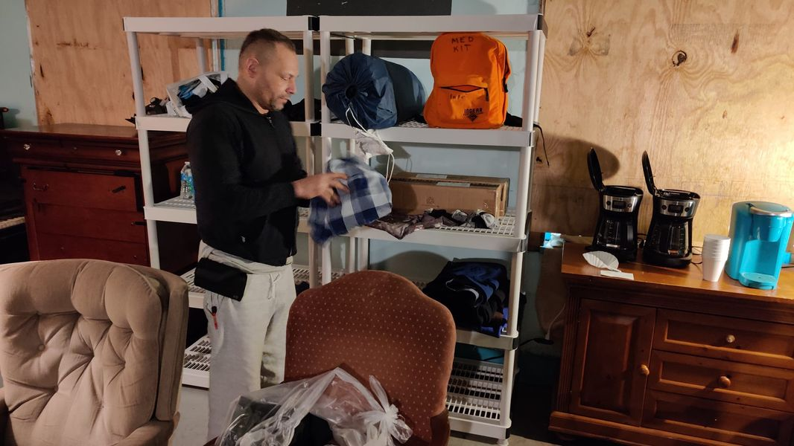

Mobile uploads
This is Ronell. He goes by Christian. That's his last name and he is one.
I am just going to keep showing you pictures of homeless people working and helping.
Christian is organizing all the amazing donations we received this week. He and another homeless person met me at my truck. Asked me how they could help and brought all these items in.
Stereotypes are powerful because they have elements of truth to them. But invariably they are not the actual truth.
I have met FAR more helpful, hardworking homeless people than lazy selfish homeless people.